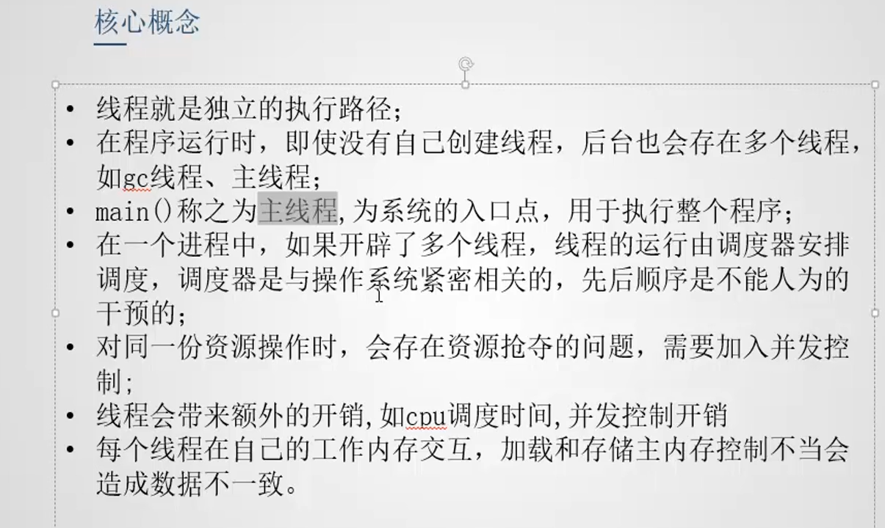

程序、进程和线程
程序
是一个静态概念，对应操作系统中一个可执行文件。
进程（Process）
执行中的程序叫进程，是一个动态概念。
- 在windows中使用任务管理器 ，在UNIX中使用ps or top可以查看进程
线程
一个进程可以产生多个线程。
区别
- 进程是资源分配的最小单位；线程是程序执行的最小单位。
- 进程有自己独立的地址空间，每启动一个进程，系统都为其分配地址空间，建立数据表维护代码段、堆栈段和数据段； 线程没有独立的地址空间，它使用相同的地址空间共享数据。
- CPU切换一个线程比切换进程花费小；创建一个线程比创建进程开销小；线程占用资源比进程少很多。
- 线程之间通信更方便，同一个进程下，线程共享全局变量、静态变量等数据（但同步和互斥问题较难处理）。而进程间的通信要用通信的方式进行（IPC）。
- 多进程程序更安全，生命力更强，一个进程死掉不会对其他进程造成影响（因为有独立的地址空间）； 而多线程程序不易维护，一个线程死掉，整个进程就死掉了（因为共享地址空间）。
- 进程对资源保护要求高，开销大，效率较低；线程对资源保护要求不高，开销小，效率高，可频繁切换。

多线程
很多多线程是模拟出来的。真正的多线程是有多个cpu的情况。如果是模拟出来的多线程，在同一时间，cpu只能执行一个代码，切换速度很快，所以有同时执行的错觉。
多线程程序
- 继承Thread类 ,重写run方法（不用
- *实现Runnable接口,重写run方法 （常用
- 实现Callable接口 ,重写run方法 (属于高并发编程juc的一部分
多用实现，少用继承。（因为java有单继承限制）
使用implements，oop多实现，灵活方便，方便同一份对象的代理。
//方法1
class PrimeThread extends Thread{ //继承Thead
public void run(){ //重写run方法
//do something
}
}
PrimeThread p = new PrimeThread();
p.start(); //开始执行
//方法2
class PrimeRun implements Runnable{
public void run(){
}
}
PrimeRun p = new PrimeRun();
new Thread(p).start(); //通过创建Thread对象调用start方法。
// 使用implements，oop多实现，灵活方便，方便同一份对象的代理
public static void main(String[] args) {
//一份资源
Web12306 web=new Web12306();
//多个代理
new Thread(web,"码畜").start();
new Thread(web,"码农").start();
new Thread(web,"码蟥").start();
}

静态代理设计模式
public class StaticProxy {
public static void main(String[] args) {
new WeddingCompany(new You()).happyMarry();
//同new Thread(线程对象).start();
}
}
interface Marry{
void happyMarry();
}
class You implements Marry{
@Override
public void happyMarry() {
// TODO Auto-generated method stub
System.out.println("you and 嫦娥奔月了");
}
}
class WeddingCompany implements Marry{
//真实角色
private Marry target;
public WeddingCompany(Marry target) {
this.target=target;
}
@Override
public void happyMarry() {
// TODO Auto-generated method stub
ready();
this.target.happyMarry();
after();
}
private void ready() {
System.out.println("布置猪窝");
}
private void after() {
System.out.println("闹洞房");
}
}
lamda
// 局部内部类
class Test2 implements Runnable{
public void run()
{
for(int i=0; i<20 ;++i) {
System.out.println("听歌");
}
}
}
new Thread(new Test2()).start(); //匿名引用
//匿名内部类
new Thread(new Runnable() {
public void run()
{
for(int i=0; i<20 ;++i) {
System.out.println("听歌");
}
}
}).start();
//lambda表达式
new Thread(()->{
for(int i=0; i<20 ;++i) {
System.out.println("听歌");
}
}).start();
new Thread(()->System.out.println("多线程学习....")).start();
线程状态
new -> runnable -> runnning ->blocked ->terminated

- 线程死亡后不能重新开启
- 线程阻塞后 不能直接运行

-
就绪状态四种原因
- start方法
- 阻塞状态解除
- yield
- jvm将cpu从本地线程切换到其他线程
-
阻塞状态四种原因
- sleep
- wait
- join
- read write等io操作
-
死亡原因
- 线程执行结束
- 强制终止方法 stop destory 等

线程停止
- 不能使用stop destroy方法
2.使用Boolean类型的中止变量，将其设为false时线程停止
sleep()
- sleep(time) 指定当前进程组设的毫秒数
- slepp存在异常InterruptedException
- sleep时间达到后线程进入就绪状态
4.sleep可以模拟网络延时、倒计时等 - 每个对象都有一个锁，sleep不会释放锁
public static void main(String[] args) throws InterruptedException {
Date endTime = new Date(System.currentTimeMillis()+1000*10);
long end=endTime.getTime();
while(true) {
System.out.println(new SimpleDateFormat("mm:ss").format(endTime));
Thread.sleep(1000);
endTime=new Date(endTime.getTime()-1000);
if(end-10000 > endTime.getTime())
break;
}
yield()
- 礼让：让当前正在执行的线程暂停
- 将线程从运行状态转为就绪状态，让cpu调度器重新调度。并没有转成阻塞状态。
public static void main(String[] args) {
new Thread(()->{
for(int i=0;i<100;i++) {
System.out.println("lambda..."+i);
}
}).start();
for(int i=0;i<100;i++) {
if(i%20 ==0) {
Thread.yield(); //main礼让
}
System.out.println("main"+i);
}
}
join()
- join合并线程，该线程执行完成后才执行其他线程。其他线程阻塞
public static void main(String[] args) throws InterruptedException {
Thread t =new Thread(()->{
for(int i=0;i<100;i++) {
System.out.println("lambda..."+i);
}
});
t.start();
for(int i=0;i<100;i++) {
if(i==20) {
t.join(); //插队 main主线程被阻塞 ，写在哪,哪被阻塞
}
System.out.println("main"+i);
}
}
优先级
java提供一个线程调度器监控程序中启动后进入就绪状态的所有线程。 线程调度器按照线程优先级决定应调度哪个线程来执行。
- 优先级低只是被调度的概率低。并不是绝对先调用优先级高的后调用优先级低的线程。

守护线程 deamon
守护线程是为用户线程服务的。 JVM停止不用等待守护线程执行完毕。
默认情况下，所有线程都是用户线程，jvm等待所有用户线程执行完毕才会停止。
public static void main(String[] args) {
God god=new God();
You you=new You();
Thread t = new Thread(god);
t.setDaemon(true);//将用户线程调整为守护线程
t.start();
new Thread(you).start();
}
其他常用方法

并发、同步
线程同步是一种等待机制。多个需要同时访问此对象的线程进入这个对象的等待池形成队列，等前面的线程使用完毕后，下一个线程再使用。
- 锁机制 synchronized
- synchronized方法 (若将一个方法声明为synchronized 会极大的影响效率）
- synchronized块
//同步方法
public void run() {
// TODO Auto-generated method stub
while(flag) {
test();
try {
Thread.sleep(50);//加了网络延迟 ，出现并发问题
} catch (InterruptedException e) {
// TODO Auto-generated catch block
e.printStackTrace();
}
}
}
public synchronized void test()
{
if(ticketNums <= 0 ) {
flag=false;
return;
}
System.out.println(Thread.currentThread().getName()+"-->"+ticketNums--);
}
//同步块
synchronized (obj) { }
//obj是同步监视器， 锁定obj才能执行{}中的代码。
synchronized方法，锁定的是this。
synchronized块，自己指定锁定的对象。
死锁
* 死锁：过多的同步可能造成相互不是放资源 从而相互等待。
* 一般发生于同步中持有多个对象的锁。
为了避免死锁，不要在一个代码块中，同时持有多个对象的锁。
生产者、消费者模式
线程通信 ： 管程法，信号灯法。
管程法
生产者 --> 缓冲区 --> 消费者
public class CoTest1 {
public static void main(String[] args) {
SynContainer container = new SynContainer();
new Productor(container).start();
new Consumer(container).start();
}
}
//生产者
class Productor extends Thread{
SynContainer container;
public Productor(SynContainer container) {
this.container = container;
}
@Override
public void run() {
// TODO Auto-generated method stub
//生产
for(int i=0;i<100;i++) {
System.out.println("生产-->"+i+"个馒头");
container.push( new Steamedbun(i));
}
}
}
//消费者
class Consumer extends Thread{
SynContainer container;
public Consumer(SynContainer container) {
this.container = container;
}
@Override
public void run() {
// TODO Auto-generated method stub
//消费
for(int i=0; i<100; i++) {
System.out.println("消费-->"+i+"个馒头");
container.pop();
}
}
}
//缓冲区
class SynContainer{
int count=0; //计数器
Steamedbun[] buns = new Steamedbun[10];//容器
//存
public synchronized void push(Steamedbun bun) {
if(count == buns.length) {
try {
this.wait(); //阻塞， 消费者通知生产则解除
} catch (InterruptedException e) {
// TODO Auto-generated catch block
e.printStackTrace();
}
}
this.notifyAll();
buns[count++]=bun;
}
//取
public synchronized Steamedbun pop() {
if(count == 0) {
try {
this.wait(); //线程阻塞， 生产者通知消费则解除
} catch (InterruptedException e) {
// TODO Auto-generated catch block
e.printStackTrace();
}
}
this.notifyAll();
return buns[--count];
}
}
//馒头
class Steamedbun{
int id;
public Steamedbun(int id) {
this.id = id;
}
信号灯法
package cooperation;
/**
* 信号灯 借助标志位
* @author Trail
*
*/
public class CoTest1 {
public static void main(String[] args) {
Tv tv = new Tv();
new Player(tv).start();
new Watcher(tv).start();
}
}
//生产者 演员
class Player extends Thread{
Tv tv;
public Player(Tv tv) {
this.tv = tv;
}
@Override
public void run() {
// TODO Auto-generated method stub
for(int i=0;i<20 ;i++) {
if(i%2 ==0) {
this.tv.play("哈哈哈");
}else {
this.tv.play("立白");
}
}
}
}
//消费者 观众
class Watcher extends Thread{
Tv tv;
public Watcher(Tv tv) {
this.tv = tv;
}
@Override
public void run() {
for(int i=0;i<20 ;i++) {
tv.watch();
}
}
}
//同一个资源 电视
class Tv{
String voice;
//信号灯
//t 演员表演 观众等待 F观众观看 演员等待
boolean flag= true;
public synchronized void play(String voice) {
if(!flag) {
try {
this.wait();
} catch (InterruptedException e) {
// TODO Auto-generated catch block
e.printStackTrace();
}
}
System.out.println("表演了-->"+voice);
this.voice = voice;
this.notifyAll();
this.flag= ! this.flag;
}
public synchronized void watch() {
if(flag) {
try {
this.wait();
} catch (InterruptedException e) {
// TODO Auto-generated catch block
e.printStackTrace();
}
}
System.out.println("听到了-->"+voice);
this.notifyAll();
this.flag=!this.flag;
}
}
高级
任务定时调度
- 使用Timer
Timer timer = new Timer();
//timer.schedule(new MyTask(), 1000);//1s后执行任务一次
//timer.schedule(new MyTask() ,1000, 200); // 1s后，每隔200ms执行一次
Calendar cal = new GregorianCalendar(2019,8,12,6,40,50);
System.out.println(cal.get(Calendar.YEAR)+" "+cal.get(Calendar.MONTH));
timer.schedule(new MyTask(),cal.getTime(), 200);//指定日期开始，每200ms执行一次
- 使用quartz
HappenBefore
代码可能没有按照期望的顺序执行。 因为会发生“指令重排”，编译器和CPU会尝试重排指令（上下无关的代码）使代码更快的运行。

- 指令重排会影响多线程操作。


volatile
（不常见）

public class VolatileTest {
private volatile static int num =0; //加了volatile，就算满cpu，也要读取改动的数据。
//private static int num =0;
public static void main(String[] args) throws InterruptedException {
new Thread(()->{
while(num ==0 ) {
//占用cpu
}
}).start();
Thread.sleep(1000);
num=1;
}
}
DCL单例模式
对外只能有一个对象，对内不限。
- volatile
- double_checking
* 单例模式 ：懒汉式套路基础上加入并发控制，保证在多线程环境下，对外存在一个对象
* 1. 构造器私有化 --》 避免外部new构造器
* 2. 提供私有的静态属性--》存储对象的地址
* 3. 提供公共的静态方法--》获取属性
public class DoubleCheckedLocking {
//2，提供私有的静态属性
private static volatile DoubleCheckedLocking instance; //加volatile避免指令重排，导致instance还没有返回给引用，就已经被其他线程get了。
//构造器私有化
private DoubleCheckedLocking() {
}
public static DoubleCheckedLocking getInstance(long time) {
//再次检测
if(null == instance ) { //避免不必要的同步
try {
Thread.sleep(time);
} catch (InterruptedException e) {
// TODO Auto-generated catch block
e.printStackTrace();
}
instance = new DoubleCheckedLocking();
}
return instance;
}
public static DoubleCheckedLocking getInstance1() {
//再次检测
if(null != instance ) { //避免不必要的同步
return instance;
}
synchronized(DoubleCheckedLocking.class) {
if(null == instance) {
instance = new DoubleCheckedLocking();
//new一个对象时： 1. 开辟空间 2 初始化对象信息 3.返回对象地址给引用
}
return instance;
}
}
public static void main(String[] args) {
Thread t=new Thread(()->{
System.out.println(DoubleCheckedLocking.getInstance(500));
});
t.start();
System.out.println(DoubleCheckedLocking.getInstance(1000));
}
}
ThreadLocal
- 线程的本地存储区

//写法：
public static ThreadLocal<Integer> threadLocal = new ThreadLocal<>(); //一个巨大的线程空间
//更改初始值
public static ThreadLocal<Integer> threadLocal = new ThreadLocal<>() {
protected Integer initialValue() {
return 200;
};
}; //一个巨大的线程空间
private static ThreadLocal<Integer> threadLocal = ThreadLocal.withInitial(()->1);
//InheritableTHreadLocal<>(); //延续上下文的数据，将父线程的数据拷贝一份给子线程
private static ThreadLocal<Integer> threadLocal = new InheritableThreadLocal<>();
可重入锁

ReentrantLock lock = new ReentrantLock() //可重入锁
- 实现如下：
public class LockTest {
Lock lock=new Lock();
public void a () throws InterruptedException {
lock.lock();
doSomething();
lock.unlock();
}
public void doSomething() throws InterruptedException {
lock.lock();
lock.unlock();
}
public static void main(String[] args) throws InterruptedException {
LockTest test=new LockTest();
test.a();
test.doSomething();
}
}
//不可重入锁
class Lock{
//是否占用
private boolean isLocked = false;
//使用锁
public synchronized void lock() throws InterruptedException {
while(isLocked) {
wait();
}
isLocked=true;
}
public synchronized void unlock() {
isLocked=false;
notify();
}
}
//可重入锁
class ReLock{
//是否占用
private boolean isLocked = false;
private Thread lockedBy=null;//存储线程
private int holdCount=0;
//使用锁
public synchronized void lock() throws InterruptedException {
Thread t = Thread.currentThread();
while(isLocked && lockedBy != Thread.currentThread()) {
wait();
}
isLocked=true;
lockedBy=t;
holdCount++;
}
public int getHoldCount() {
return holdCount;
}
public synchronized void unlock() {
if(Thread.currentThread() == lockedBy) {
holdCount--;
if(holdCount == 0) {
isLocked=false;
notify();
lockedBy=null;
}
}
}
}
CAS 原子操作 (compare and swap)。


public class CAS {
private static AtomicInteger stock = new AtomicInteger(5);
public static void main(String[] args) {
for(int i=0 ; i<5 ;i++) {
new Thread(()->{
try {
Thread.sleep(1000);
} catch (InterruptedException e) {
e.printStackTrace();
}
Integer left = stock.decrementAndGet();//操作
if(left<1) {
System.out.println("抢完了");
return ;
}
System.out.println(Thread.currentThread().getName()+"-->抢到了一件"+"-->>还剩"+left);
}).start();
}
}
}